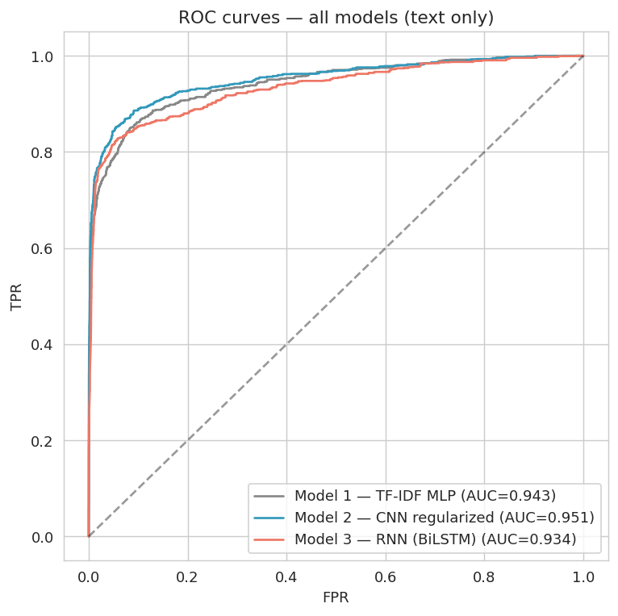
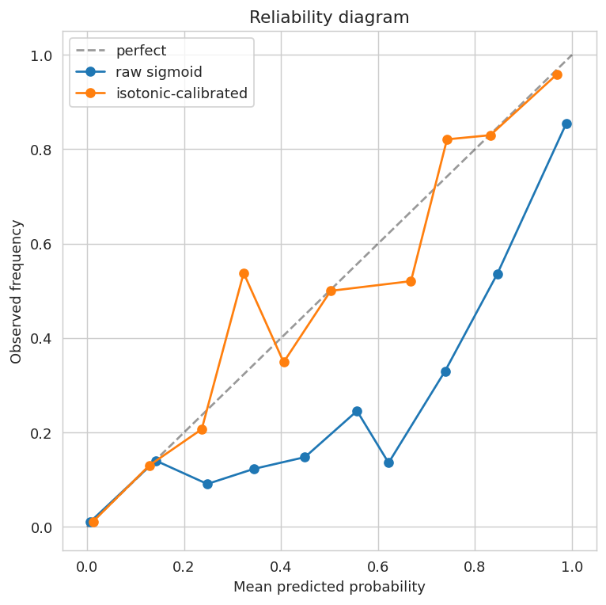
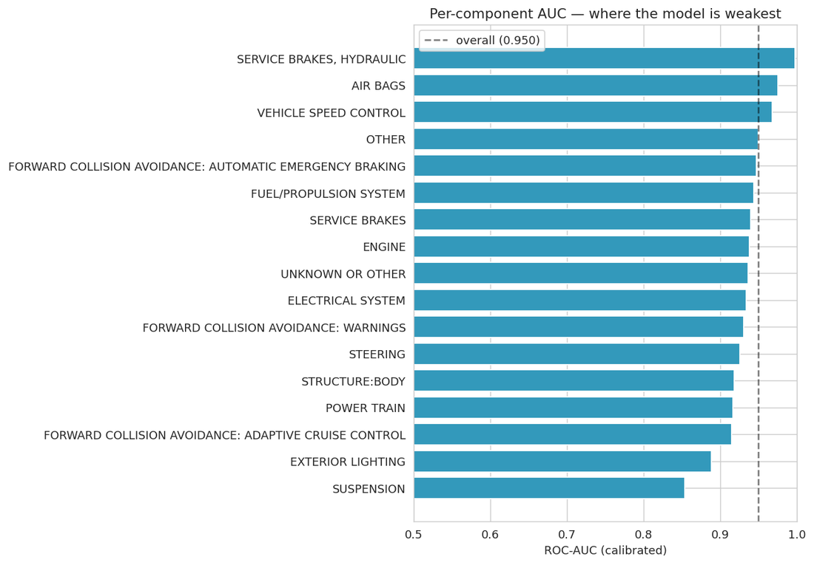

NHTSA receives hundreds of thousands of owner complaints in free text. Triaging them by hand does not scale, but the ones describing a crash, fire, injury or death are exactly the ones a reviewer needs to see first. The task: given only the complaint narrative, predict whether it describes a serious safety failure.
The framing matters as much as the modeling. This is a triage signal for a human reviewer, not an autonomous verdict on whether a vehicle is safe — which is why the evaluation focuses on ranking quality and calibrated probabilities rather than a single accuracy figure.
The label is constructed from four source fields: a complaint is serious if CRASH or FIRE is flagged, or if injuries or deaths are greater than zero. Those four fields build the gold label and are then withheld entirely from the models, which see only the CDESCR narrative — no make, model, manufacturer, state, component, or incident flag.
The split is the part I would defend hardest. One incident can appear across multiple rows because different components attach to the same complaint, so splitting by row would put near-duplicate text in both train and test. Instead the data is partitioned by ODINO, the unique complaint identifier, roughly 70/15/15 — so no complaint can straddle the split.
Component category is derived too, but strictly for post-hoc subgroup analysis. It never enters training, which is what makes the per-component results below diagnostically meaningful rather than circular.
In the held-out test set, 1,495 of 22,605 complaints are positive — a 6.61% serious-failure rate. A model that answered “not serious” every single time would score 93.4% accuracy while being worthless, so accuracy was never the headline metric.
All three models train with class weights, the positive class weighted by the negative-to-positive ratio, so rare serious complaints contribute proportionally more loss and the networks cannot minimize error by simply favoring the majority.
| Model | ROC-AUC | 95% bootstrap CI | F1 | Brier |
|---|---|---|---|---|
| TF-IDF + MLP | 0.9428 | [0.9349, 0.9500] | 0.6338 | 0.0459 |
| CNN (regularised) | 0.9513 | [0.9443, 0.9578] | 0.7318 | 0.0291 |
| BiLSTM | 0.9337 | [0.9255, 0.9414] | 0.6797 | 0.0398 |

The CNN leads on every metric. But the bootstrap intervals are what make the comparison honest: the CNN’s [0.9443, 0.9578] sits clear of the BiLSTM’s [0.9255, 0.9414], so that gap is real. Against the TF-IDF MLP’s [0.9349, 0.9500] the intervals overlap — the CNN’s 0.0085 edge over a bag-of-words baseline is not cleanly separable at this sample size.
That shapes the recommendation rather than undermining it. The CNN is the better model and worth deploying, but Model 1 remains a legitimate operational choice if inference cost or interpretability matters more than a fraction of a point of AUC. The BiLSTM is the clear loser: most expensive to train, lowest AUC. The signal in these narratives is lexical and local — explicit words and short phrases — not long-range syntax, which is exactly why the convolution beats the recurrence.
AUC only says the model ranks serious complaints above non-serious ones. For triage you need more: a score of 0.70 should mean roughly a 70% chance. Those are different properties and the raw sigmoid outputs did not have the second one.
Fitting isotonic regression on validation predictions and applying it to the test set improved the Brier score from 0.0291 to 0.0232.

Calibration also reframes the threshold decision. At a fixed 0.5 cut-off the calibrated model gives precision 0.8712 and recall 0.6829 — but in safety triage a false negative is far more costly than a false positive, since a missed serious complaint is a review that never happens. The right operating point is lower than 0.5, and it should be set from an explicit cost function rather than inherited from a default.
Because component labels were never used in training, breaking performance down by component is a genuine diagnostic rather than a restatement of an input.

Performance varies materially: Service Brakes, Hydraulic reaches 0.997 and Air Bags 0.975, while Suspension sits at 0.854 and Exterior Lighting at 0.888. That pattern is interpretable — a hydraulic brake failure or an airbag event tends to be described in vivid, unambiguous language, whereas a suspension complaint often reads the same whether or not it ended in a crash. Some of these groups carry few positives, so the subgroup figures deserve caution.
The dataset carries selection bias by construction: it describes complaints that people chose to submit to NHTSA, not the safety of all vehicles on the road, and results depend on how fluently each complainant wrote in English. A high score is a prioritization signal, not evidence that an event occurred.
Given that the BiLSTM underperformed a bag-of-words baseline, I would expect smaller gains from a pretrained transformer than the usual assumption suggests, though it is still the obvious next test. More valuable would be temporal validation — training on earlier complaints and testing on later ones — to check whether both discrimination and calibration hold as vocabulary drifts.